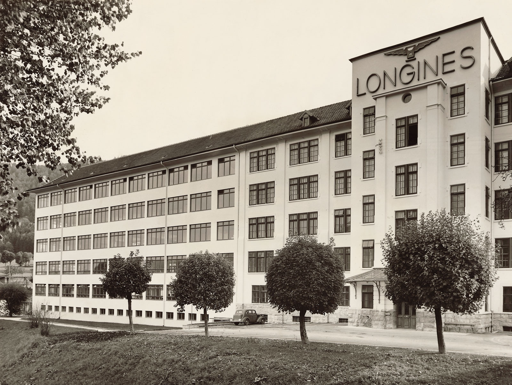

公司简介

Auguste Agassiz, Ernest Francillon
在承担这所著名世家经营责任的同时，他也在思考如何对本地钟表业常用的制造方法进行改良。
浪琴表：优雅、传统与性能
浪琴表(Longines)于1832年在瑞士索伊米亚创立，对传统、优雅与卓越性能的不懈追求成就了品牌精纯的制表专长。 作为世界锦标赛的计时器及国际联合会的合作伙伴，浪琴表品牌不但拥有着悠久而灿烂的历史，更以其优雅的钟表享誉全球，亦是世界领先钟表制造商 Swatch Group S.A. 公司的旗下一员。 浪琴表世家以飞翼沙漏为徽标，业务遍布全球逾 150 多个国家。 1832 年，奥古斯特•阿加西（Auguste Agassiz）与位于圣耶米（Saint-Imier）的一家钟表行携手合作，进入钟表制造界，并迅速成为了阿加西公司（Agassiz & compagnie）的法定负责人。 当时，这所钟表世家依照“établissage”制表方式生产钟表（即制表匠在家中工作），并大力拓展商业网络，成功将产品销售到了其他大洲，尤其是大西洋彼岸。 19 世纪 50 年代，阿加西（Agassiz）的侄子奥内斯特•弗兰西昂（Ernest Francillon）接管了钟表行的生意。 在承担这所著名世家经营责任的同时，他也在思考如何对本地钟表业常用的制造方法进行改良。 他准备对原本零星分散的各必要制表步骤进行重组，将其全部整合在同一所建筑内完成。 弗兰西昂（Francillon）想要建立一家工厂，借助生产机械工艺，实现从组装到完工的各道流程。

为了实现设想，1866 年，他在流经圣耶米山谷（Saint-Imier）的苏士河（Suze）右岸购买了两块毗连的土地，因为那里在当地被叫做“Les Longines”，于是，他 1867 年建立制造工厂时就以“Les Longines”对其进行了命名。 奥内斯特•弗兰西昂（Ernest Francillon）聘请了亲族中一位名叫雅克•大卫（Jacques David）的年轻工程师，协助其开发设备、改良钟表制造工艺及流程。 19 世纪 70 年代期间，弗兰西昂（Francillon）坚持的产业化选择取得了很好的实效，直至 20 世纪前叶，工厂均始终保持着不断发展壮大的强劲势头。 1911 年，浪琴表生产厂的员工已超过 1100 人，钟表作品畅销世界各地。 浪琴表专注技术研究、精益求精，截至 1929 年巴塞罗那展会，已在众多国际及世界博览会上揽获了十次以上的显赫大奖，堪当实至名归的“最荣耀”钟表世家品牌。 1889 年，弗兰西昂（Francillon）对由浪琴表（Longines）名称及飞翼沙漏图形组成的制造品牌进行了专利注册。 如今，浪琴表（Longines）已经成为世界知识产权组织（OMPI）所有国际注册中历史悠久、未经任何修改、但仍活力四射的卓异品牌。 早自 1867 年起，该钟表世家就将“飞翼沙漏”图形及“浪琴表（Longines）”品牌作为了非凡品质的象征，与那些试图盗用浪琴表产品卓越盛名牟利的赝品进行着不懈的斗争。 浪琴表凭借着其所积累的技能优势，逐步与运动界建立了密切的联系，为众多体育赛事贡献着自己的专有技术，其在 20 世纪期间的表现尤为令人称道。